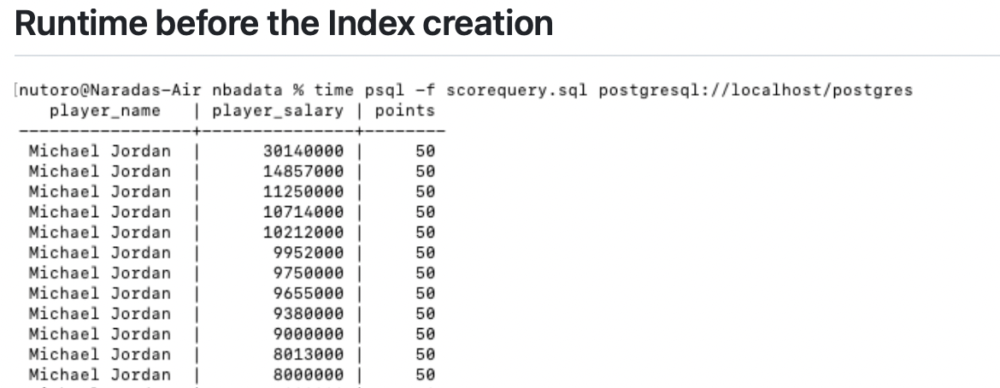

Movie Personality Test
Introducing NBA Dataset!
his dataset contains records and information among all NBA players, coaches, and games from 1996-2021. The dataset includes information on the statistics of each player including their salaries, height, weight, age, college, position and the years they started. On top of that, this dataset provides similar information on coaches and every single statistic that goes into a game including the amount of points, fouls, steals, blocks, etc that occurred in every single game.
The applications with our dataset is similar to what an encyclopedia does. Since our dataset provides vast information on NBA players, coaches, and games, our vision was to create an app that allowed users to query through any information they'd like to see. For example, if a user wanted to find out the players on Boston Celtics in 2020, our app would return all the players in that specific year. Currently there is no such app that functions the way we would like our app to, so it would be very interesting to see people of interest in basketball win a bet on whether Stephen Curry had a 3-point shot percentage higher than 50% in 2019..
implement an appropriate indexing scheme, based on the application’s needs which was built into the loader programs.
This project was built for our Database class in my senior year in LMU
FoodVisor Github: GitHub
Technologies Used: PostgresSQL, Python, Git, Command Line